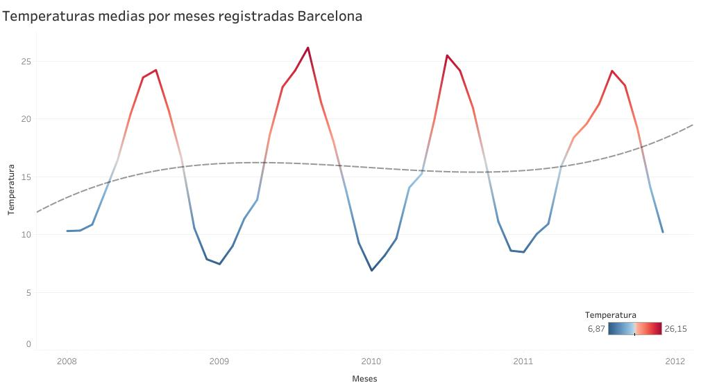
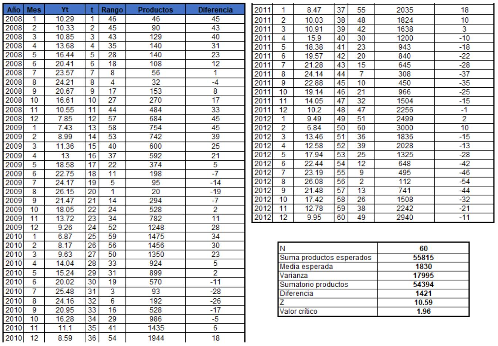
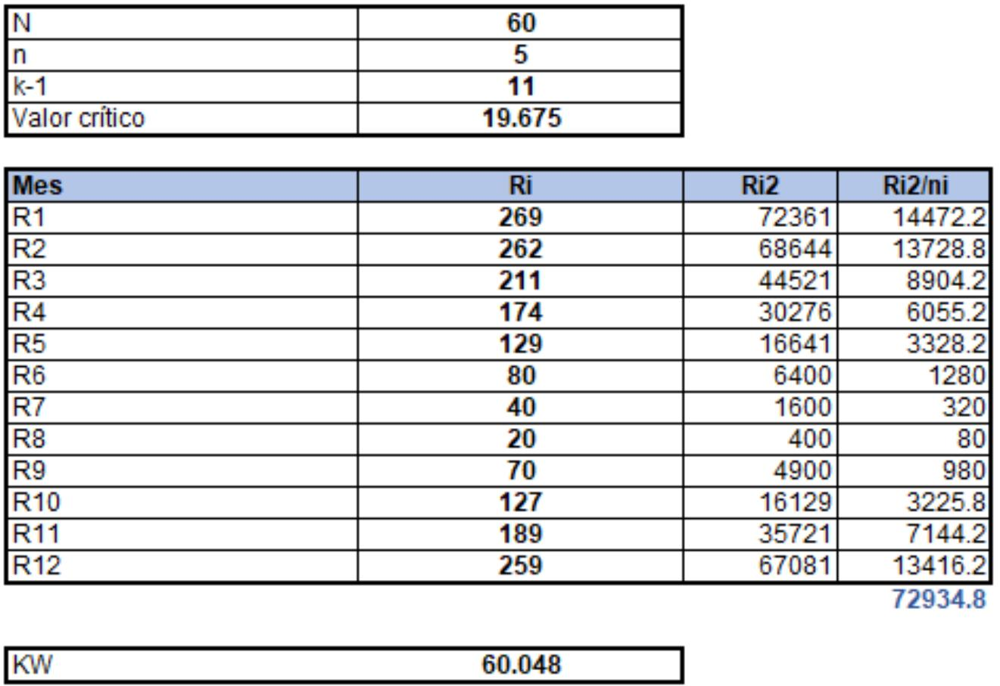
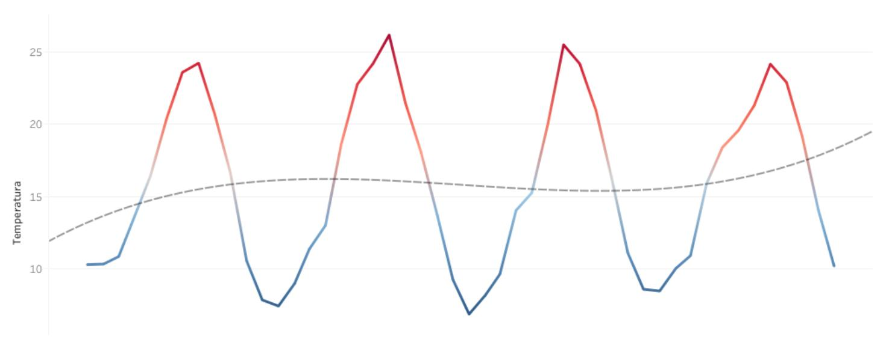

P-1.1 - Facturación anual. Periodo muestrual
La siguiente tabla recoge la serie de facturación anual de un negocio (unidades: miles de €). La tabla contiene las predicciones muestrales y extra-muestrales obtenidas con dos métodos diferentes.
a)Utilizando exclusivamente la información del período muestral, justifique cuál es el método que hace mejores predicciones y diga qué capacidad predictiva tiene.
Link a google sheetComparando los datos del año 2003 al 2009 (muestra), el MSE del método A tiene un error de 0.3683 frente a un 36.5833 del método B. Por ello, el mejor método es el A, ya que tiene un error menor.

P-1.2 - Facturación anual. Periodo extra-muestrual
b) Se mantiene la ordenación de los métodos si las predicciones se evalúan exclusivamente con los datos del período extra-muestral? ¿Cuál es ahora la capacidad predictiva de lo mejor de ambos métodos?
Comparando los datos extra muestrales (2010, 2011 y 2012), el MSE del método A tiene un error de 0.3683 frente a un 89.42 del método B. Por ello, el mejor método es el A de la misma manera, ya que tiene un error menor.
P-1.3 - Facturación anual. Gráficos
c) Haz dos gráficos de todas las observaciones disponibles: (1) con la serie original (Yt) y las predicciones con el método A; y (2) con la serie original (Yt) y las predicciones con el método B. Comenta los resultados obtenidos y compáralos con los de los apartados a) y b)
Los gráficos nos avalan en lo comentado con los cálculos del MSE, con el método A se observa como la predicción se acerca mucho a la muestra, mientras que el método B difiere mucho más ambas curvas ofreciendo mayor error.

P-2.1 - Serie temporal tipo 1. AES(0,3) AES(0,6)
a) Calcula las predicciones con AES(0,3) y AES(0,6). ¿Cuál de los dos métodos es mejor? Evalúa la capacidad predictiva de lo mejor de los dos métodos de predicción. Da resultados para el período muestral y para el período extra-muestral.
Link a google sheet
En este caso para el cálculo de cada AES hemos implementado el cálculo del Ft, con la predicción en el año anterior más el factor de suavizado según el AES a la diferencia entre el valor real y la predicción del periodo anterior. Comparando los datos de los primeros 4 años (muestra), el MSE del AES(0.6) es mejor, teniendo menor error (8.975) respecto al AES(0.3) que devolvió un error de 11.808. Comparando los datos extra muestrales (años 5 y 6), el MSE del AES(0.6) es mejor, teniendo menor error (9.097) respecto al AES(0.3) que devolvió un error de 12.436. El método AES(0.6) ha demostrado ser bueno tanto en la muestra como con los datos extra muestrales, si se busca determinar cual tiene mejor capacidad predictiva de los dos es el AES(0.6).
P-2.2 - Serie temporal tipo 1. MM(2) MM(3)
b) Calcula las predicciones con MM(2) y MM(3). ¿Cuál de los dos métodos es mejor? Evalúa la capacidad predictiva de lo mejor de los dos métodos de predicción. Da resultados para el período muestral y para el período extra-muestral
Link a google sheet
Para el cálculo de la media móvil de orden 2 y 3, hemos tomado los dos/tres valores anteriores a la predicción divididos por su orden Comparando los datos muestrales para los cálculos de las medias móviles, la MM(3) dio un error menor (0.934) respecto a la MM(2) con error de 12.085. Comparando los datos extra muestrales para los cálculos de las medias móviles, la MM(2) dio un error menor (8.433) respecto a la MM(3) con error de 8.948. Los dos métodos han demostrado ser buenos, el MM(3) para los datos muestrales y el método MM(2) ligeramente mejor para los extra muestrales si es el objetivo.
P-2.3 -Serie temporal tipo 1. Ingenuo media simple
c) Calcula las predicciones con método ingenuo y método de la media simple. ¿Cuál de los dos métodos es mejor? Evalúa la capacidad predictiva de lo mejor de los dos métodos de predicción. Da resultados para el período muestral y para el período extra-muestral
Link a google sheet
Calculamos el método ingenuo tomando como valor en un periodo el real del periodo anterior, y para la media simple el promedio de todos los periodos anteriores. Comparando los datos muestrales para ambos métodos, el método ingenuo funciona mejor en la muestra con un error de 8.190 respecto al error de 9.670 del método de la media simple. Comparando los datos extra muestrales para ambos métodos, el método de la media simple da un menor error de 8.433 respecto al error de 9.410 del método ingenuo. Si lo que se busca es la capacidad predictiva en años extra muestrales, en este caso el método de la media simple ha demostrado funcionar mejor.
P-3 - Actividad FASE 1
P-3.1 - Introducción. Contextualización de los datos
La ciudad de Barcelona, ubicada en la costa noreste de España y conocida por su clima mediterráneo, ha enfrentado en los últimos años desafíos importantes relacionados con las temperaturas extremas. Para abordar este fenómeno, hemos seleccionado un conjunto de datos proporcionado por el Servicio Meteorológico de Cataluña. Estos datos incluyen registros de temperaturas diarias de diversas ciudades, pero hemos filtrado el conjunto de datos para centrarnos en la ciudad de Barcelona. El conjunto de datos específico utilizado pertenece a la serie "Observatorio Fabra" con código de serie "Baic0008d", que recoge temperaturas máximas y mínimas diarias desde el año 1950 hasta diciembre de 2023.
El propósito de analizar este conjunto de datos es entender cómo se han comportado las temperaturas en Barcelona con sus datos históricos, con el objetivo de prever la evolución climática futura. La predicción de la temperatura no solo tiene implicaciones directas para la vida diaria de los ciudadanos, sino que también es crucial para sectores estratégicos de la ciudad. El turismo, la salud pública, la eficiencia energética, la planificación urbana, la agricultura y otros sectores clave dependen de contar con datos climáticos precisos para anticipar y mitigar los efectos de variaciones y tendencias climáticas.
Las temperaturas extremas durante los meses de verano podrían afectar negativamente a la industria turística, uno de los pilares de la economía local, al dificultar las actividades al aire libre. Asimismo, la salud pública podría verse comprometida, especialmente en lo que respecta a los colectivos más vulnerables, como los ancianos y niños, debido a olas de calor cada vez más frecuentes. Además, la eficiencia energética se verá afectada por el incremento de la demanda de energía para refrigeración, y las predicciones ayudarán a planificar su uso de manera más eficiente y sostenible. También, la planificación urbana se beneficiará de este tipo de predicciones para adaptar las infraestructuras y aumentar los espacios verdes, mitigando los impactos del calor urbano.
P-3.2 - Aplicación empírica. Determinación del tipo de serie temporal
La serie de datos seleccionada, "Observatorio Fabra", corresponde a una variable de temperatura registrada diariamente a lo largo de un periodo de 74 años (1950-2023). Con estos datos, se ha generado una serie temporal de intervalos regulares mensuales, lo que nos proporciona un total de 888 registros, donde cada fila representa el valor agregado mensual de la temperatura en la ciudad de Barcelona. Para este ejercicio tomaremos sólo 60 registros con los datos de 5 años, de 2008 a 2021 incluidos.
El análisis de esta serie temporal de una sola variable (temperatura) con intervalos de tiempo regulares (mensuales) es clave para identificar patrones estacionales y posibles ciclos a largo plazo.
Esto nos permitirá anticipar la evolución de las temperaturas y hacer predicciones más precisas sobre cómo estas influirán en los diferentes sectores mencionados previamente.
Utilizando herramientas estadísticas y métodos de predicción, esperamos extraer información valiosa sobre las tendencias de temperatura, su estacionalidad y las variaciones cíclicas en el comportamiento histórico de las temperaturas en Barcelona.
Este análisis será de gran utilidad para las autoridades locales, que podrán diseñar estrategias y políticas para mitigar los impactos del cambio climático, adaptar la infraestructura urbana y gestionar los recursos energéticos y de salud pública de manera más eficiente. Además, esta información también será clave para planificar la adaptación climática a largo plazo y minimizar los riesgos asociados con temperaturas extremas en la ciudad.
P-3.3 - Representación gráfica de la serie temporal
Link a gráfico dinámico P-3.4 - Contraste (Contraste de Daniel y de kruskal-Wallis)
Construimos una tabla incluyendo el cálculo del rango, productos y diferencia.
Con ello podemos calcular la suma de productos, media esperada, varianza, diferencias entre sumas de productos y finalmente Z y el valor crítico.
Siendo el valor absoluto de Z igual a 10.59, y este mayor al valor crítico (1.96), rechazamos la hipótesis nula.
Esto significa que existe una tendencia ascendente significativa.
Link a google sheet A continuación con la misma tabla construida calculamos los datos necesarios para el cálculo de Kruskal-Wallis.
Con una muestra de 60 meses correspondiente a 5 años, nuestro k-1 (12 meses menos 1) tenemos un valor crítico de 19,675.
Calculamos diferenciado por meses Ri2/ni que requeriremos para aplicar la fórmula de KW.
Este cálculo de KW es finalmente de 60,05.
Siendo KW mayor que el valor crítico (60,05 > 19,675), rechazamos la hipótesis nula.
Esto significa que existe una estacionalidad significativa en las temperaturas.
 Link a google sheetP-3.5 - Conclusiones a partir de los contrastes
Los análisis estadísticos confirman que las temperaturas han aumentado significativamente durante el período estudiado (2008-2012).
Además, las temperaturas varían de manera significativa entre los diferentes meses del año, lo que evidencia una estacionalidad marcada.
Por lo tanto, podemos concluir que existe una tendencia ascendente significativa y una estacionalidad significativa en las temperaturas.
